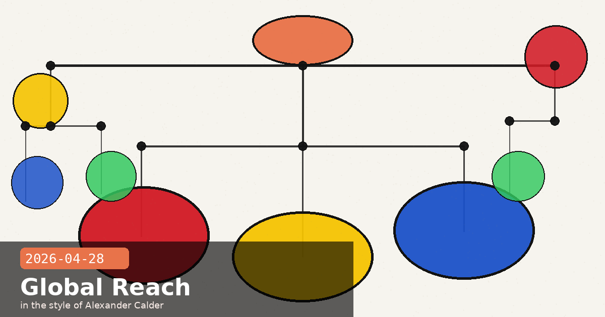

Sydney Office Opens, Harvard Adopts Claude & Bedrock AgentCore CLI Lands

🧭 Anthropic's Fourth Asia-Pacific Office Opens in Sydney — With a New ANZ GM from Snowflake
Anthropic officially opened its Sydney office on April 27–28, naming Theo Hourmouzis as General Manager for Australia and New Zealand. Hourmouzis joins from Snowflake, where he was Senior Vice President for Australia, New Zealand and ASEAN. Sydney is Anthropic's fourth Asia-Pacific location, following Tokyo, Bengaluru, and Seoul — a sequence that maps almost exactly onto the roll-out of Claude enterprise contracts in each region.
Why Sydney, why now
The expansion follows several concrete anchoring events in Australia:
An MOU with the Australian government to co-operate on AI safety research under Australia's National AI Plan, signed at a meeting between Dario Amodei and Prime Minister Anthony Albanese.
Deep partnerships with Commonwealth Bank, Canva, Xero, and Quantium — all significant enterprise deployments that now have a local Anthropic team to support them.
The Economic Index report "How Australia Uses Claude", which Anthropic published to document local adoption patterns ahead of the office opening.
What a local office actually changes
Having a dedicated GM in-country means enterprise sales cycles, compliance discussions, and data-residency conversations can happen with someone who knows Australian regulatory context — including APRA's CPS 230 operational resilience standards that financial-sector customers must satisfy. The Sydney office also shortens the feedback loop on feature requests from the ANZ ecosystem into Anthropic's product roadmap. Hourmouzis met with customers and partners during the opening week alongside executives from Anthropic's global team, signalling this is an account-management and product-partnership role, not just a presence function.
Seoul is next
Anthropic confirmed Seoul is scheduled to open as its fifth Asia-Pacific office shortly after Sydney, following the same pattern of pairing a local office with an existing cluster of enterprise deployments. If you are evaluating Claude for a South Korean deployment, partner discussions may now be available through the Seoul team rather than routing through San Francisco.
🧭 Harvard FAS Adopts Claude and Phases Out ChatGPT Edu — What This Signals for Higher Education
Harvard University's Faculty of Arts and Sciences announced on April 28 that it will add Anthropic's Claude to its suite of institutionally-supported AI platforms while discontinuing its ChatGPT Edu pilot. The ChatGPT Edu programme, which underwrote OpenAI enterprise accounts for all FAS affiliates, will require "administrative and budgetary approval" from individual departments after June 2026 — effectively ending the universal provision. Claude becomes the new default institutional AI tool alongside Google's Gemini, which Harvard retains under an existing Google–Harvard agreement.
The FAS reasoning
The stated rationale is deliberate diversification: FAS wants to ensure students and researchers are familiar with multiple AI platforms rather than developing dependency on any single provider. Given how rapidly the AI landscape is evolving, the faculty said this will be "continually evaluated" — meaning today's choice of Claude is a snapshot, not a permanent commitment. The practical implication is that Harvard's roughly 25,000 FAS-affiliated students, faculty, and staff will shift their default institutional tool toward Claude.
Why this matters beyond Harvard
University adoption decisions propagate in ways that commercial enterprise wins do not. A student who spends two years working primarily in Claude's interface — learning its citation style, context-window behaviour, and code completion patterns — is more likely to reach for Claude in their first professional role. Harvard's decision will be watched by other R1 universities weighing similar institutional AI arrangements. Several Ivy League peer institutions are understood to be in active vendor discussions, and Harvard's FAS choice will be a data point.
What developers at educational institutions should check
If your institution is moving to Claude, the Harvard FASRC team has published an Anthropic API access guide for research computing users. Key practical note: institutional accounts may expose the API under a shared key managed by HUIT — request a personal API key only if you need to build custom integrations outside the institutional wrapper, as rate limits are pooled.
🧭 Bedrock AgentCore Gets a CLI and Claude Cowork Lands in AWS — What This Means for Enterprise Agent Builders
Two Claude-on-AWS milestones landed this week that move the platform from preview-only to production-ready for enterprise teams. First, Amazon Bedrock AgentCore shipped a managed harness (preview) and the AgentCore CLI. Second, Claude Cowork is now available inside Amazon Bedrock, bringing Anthropic's team-based collaborative AI directly into AWS-managed infrastructure.
AgentCore CLI: Infrastructure-as-Code for agents
The AgentCore CLI lets you define an agent — model, system prompt, tools — and deploy it immediately with no bespoke orchestration code. Under the hood, the CLI emits an AWS CDK stack (Terraform support is coming), giving the agent the governance and auditability properties of infrastructure-as-code from day one. Highlights:
Available in 14 AWS Regions at no additional charge beyond standard Bedrock inference pricing.
The managed harness handles session lifecycle, sandboxed tool execution, and server-sent event streaming — the plumbing that most teams build themselves and then maintain indefinitely.
When you outgrow the managed harness defaults, you can export the orchestration as Strands-based code and take full control without rewriting from scratch.
# Install and scaffold a new agent project
npm install -g @aws/agentcore-cli
agentcore init my-claude-agent --model claude-sonnet-4-6
agentcore deploy --stage prod
# Exported CDK stack lives in cdk/stacks/my-claude-agent-stack.ts
# Swap to Strands: agentcore eject --output ./agents/my-claude-agent/
Claude Cowork in Bedrock: team collaboration inside your AWS boundary
Claude Cowork — Anthropic's multi-participant AI collaboration mode — is now deployable within Amazon Bedrock environments. Enterprise teams that could not use the claude.ai/cowork endpoint for compliance reasons (data residency, VPC boundary requirements) can now run Cowork sessions that stay entirely within their AWS account. Data does not leave the customer's AWS environment, and billing rolls up to the existing Bedrock cost centre. The practical implication: a legal team running a contract review session, or an engineering team doing architecture review, can now do so with Claude Cowork without any data traversing Anthropic's own API endpoint.
Deepened infrastructure partnership
The week's AWS roundup also confirmed that Anthropic is now training its most advanced models on AWS Trainium and Graviton, co-engineering with Annapurna Labs at the silicon level. This is not just a hosting relationship — it's joint hardware optimisation that should eventually translate into lower inference latency and higher throughput for all Bedrock Claude customers.